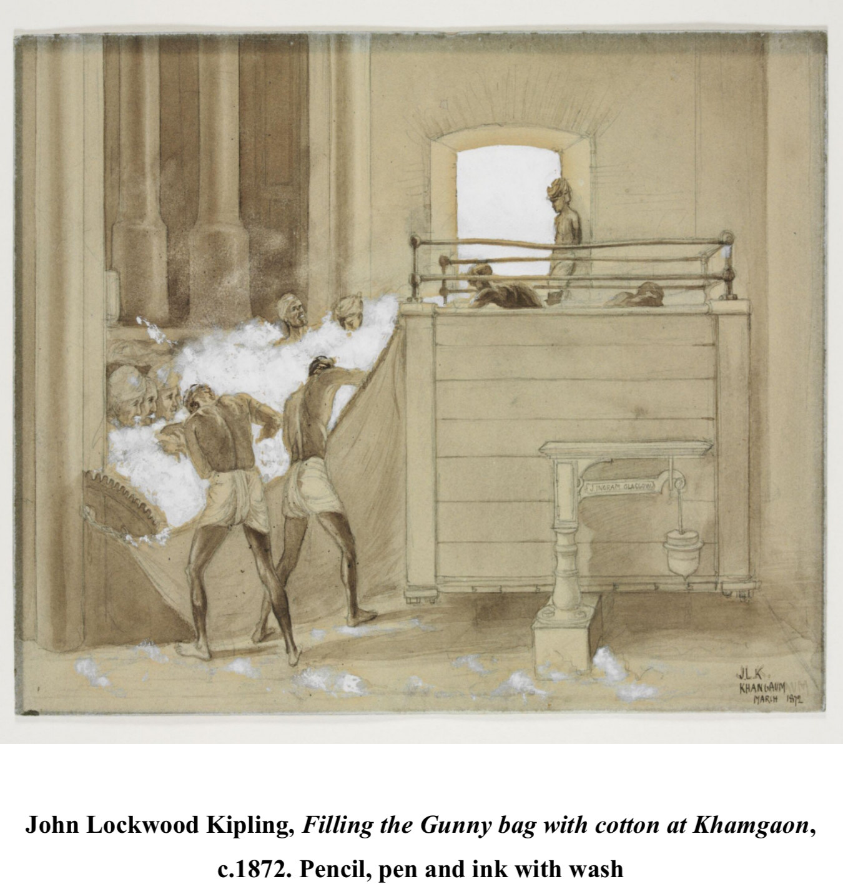
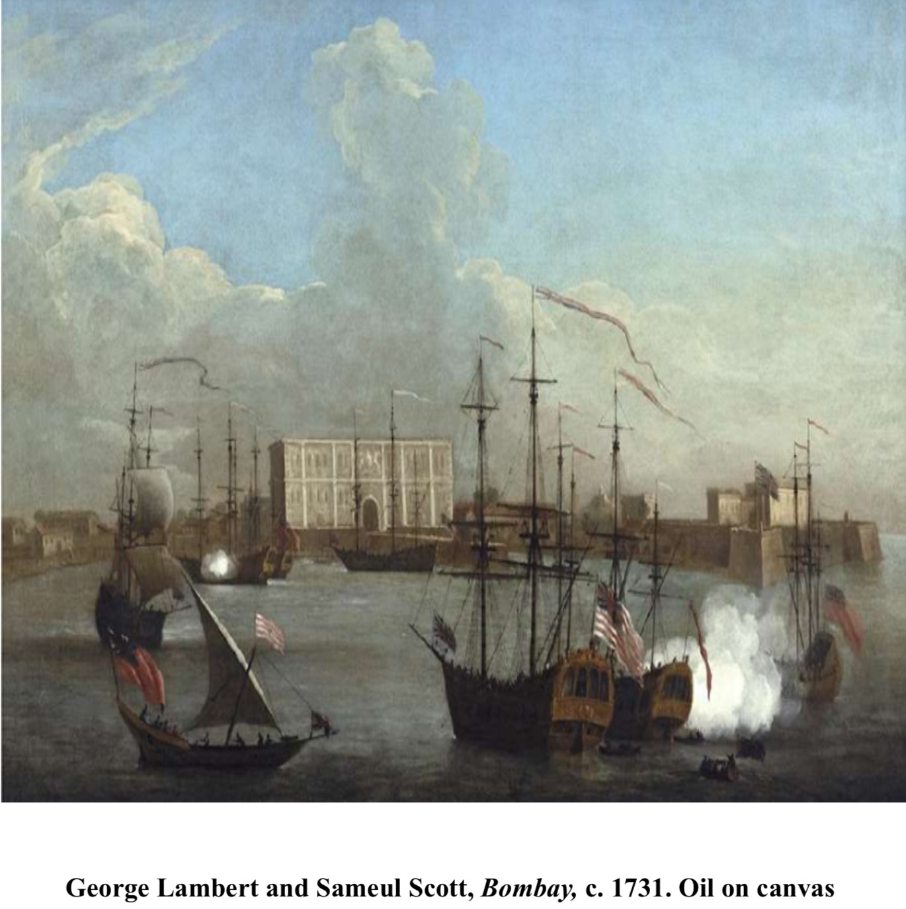
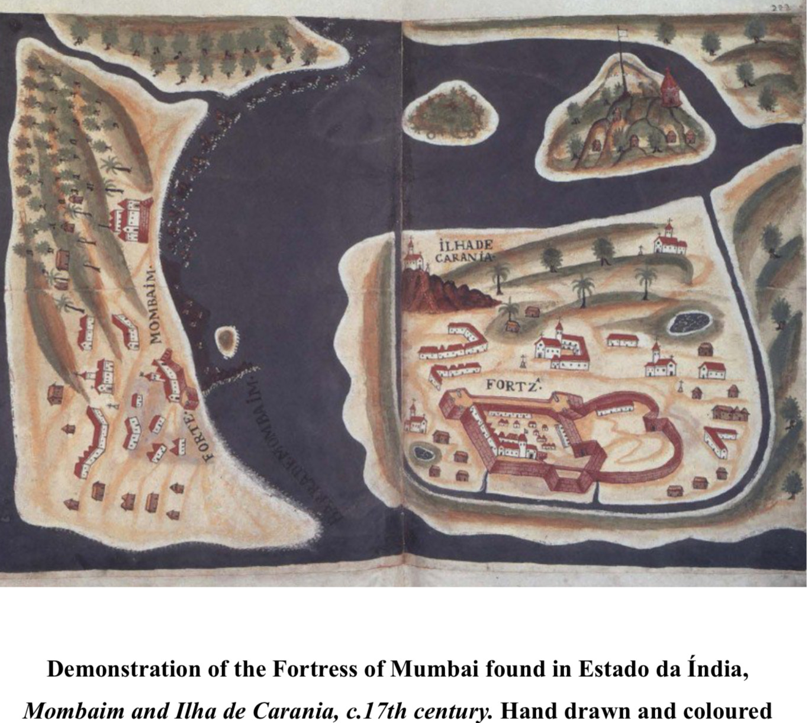
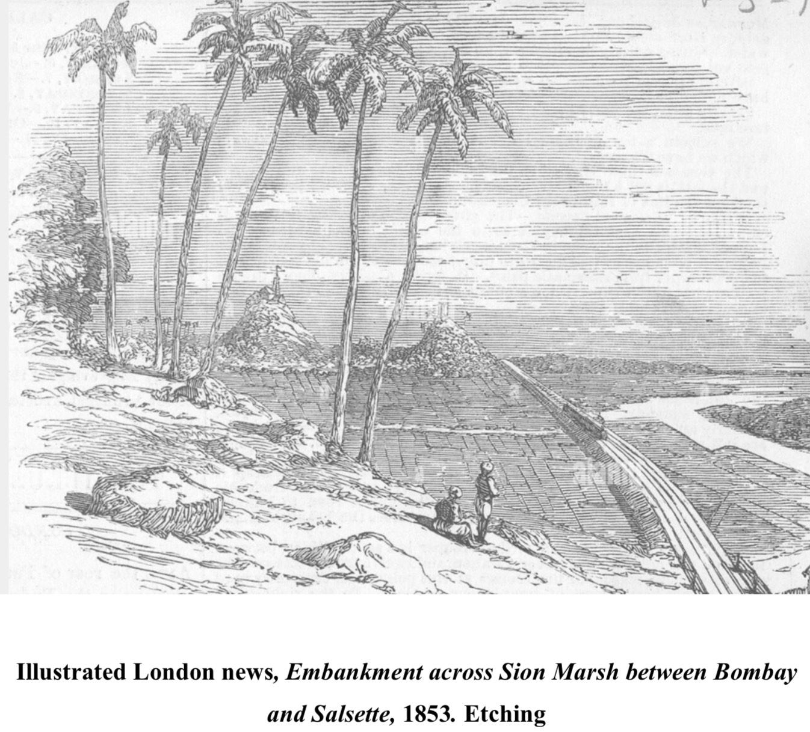
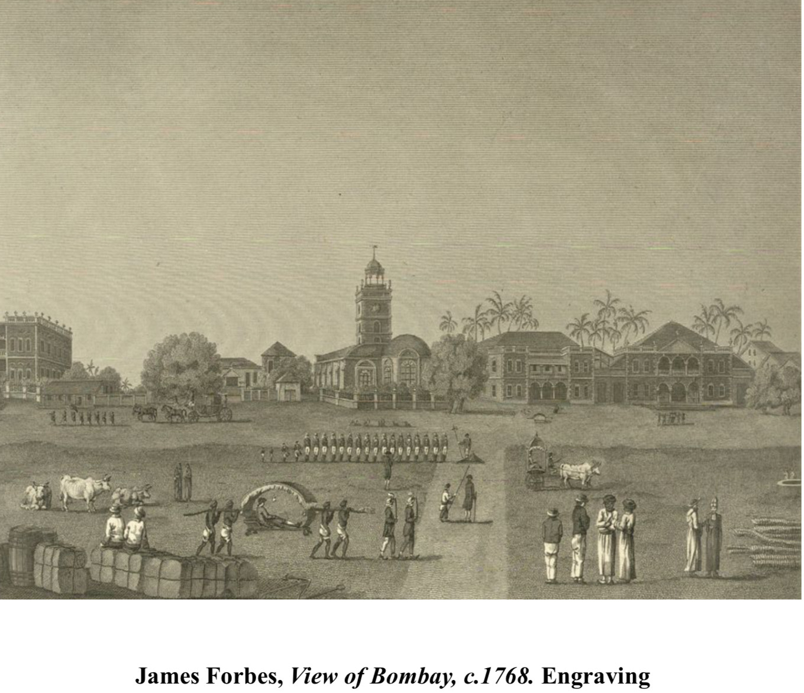
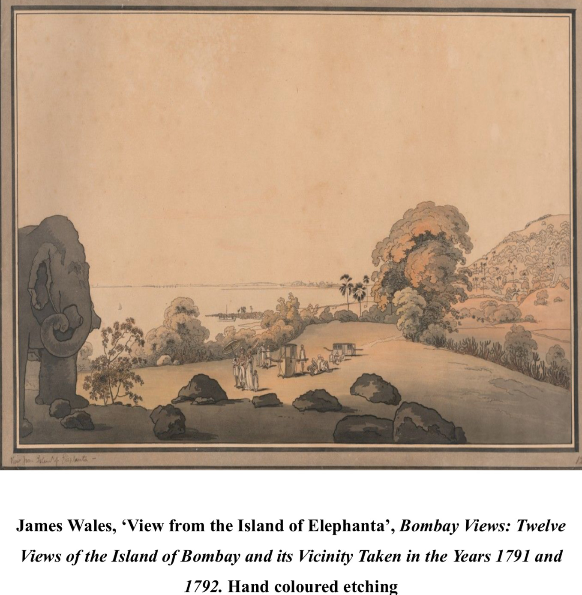
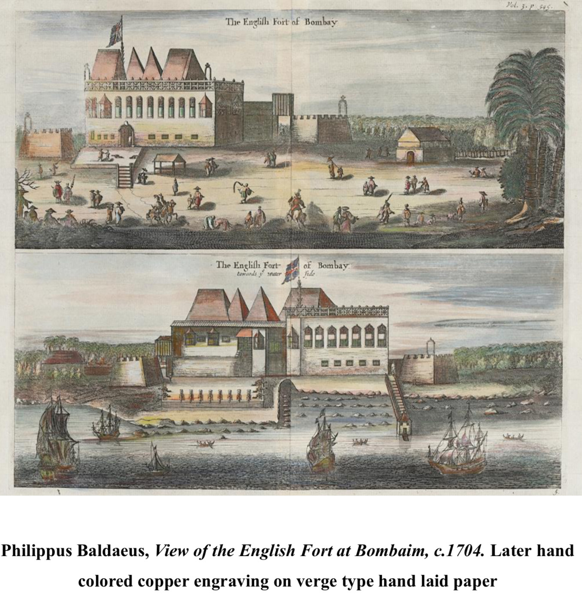
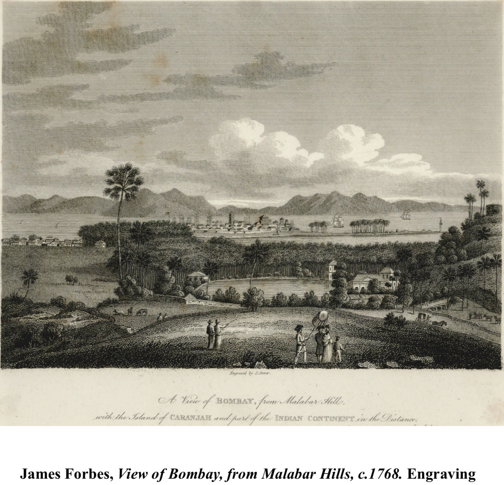
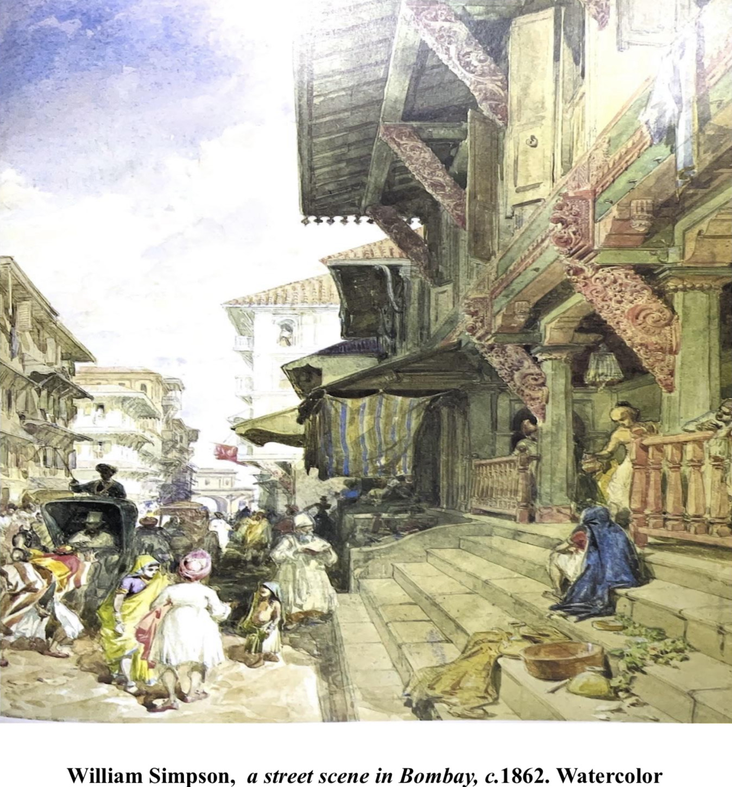

How can a painting become a historical source? This thesis explores Mumbai’s transformation from a fishing village into a financial centre through the work of European artists from the 17th to 19th centuries.
The question
Artworks can reveal perspectives absent from written records. This research examines what depictions of maritime trade, cotton markets, infrastructure, and everyday life tell us about Mumbai’s economic past—and where artistic bias limits those interpretations.
Reading images alongside records
A qualitative method combines visual analysis with historical contextualisation. Works by Philippus Baldaeus, George Lambert, James Forbes, James Wales, Robert Melville Grindlay, John Lockwood Kipling, William Simpson, and John Griffiths are examined for subject matter, composition, and iconography. Visual observations are cross-referenced with written records.
From harbours to cotton markets
Early maps and port scenes foreground colonial presence and maritime power. Forbes’s View of Bombay Green and Grindlay’s illustrations reveal cotton markets and commercial networks. Kipling’s sketches offer evidence of the cotton industry while also exposing unequal relationships between Indian figures and English merchants.
Infrastructure and everyday life
James Wales’s watercolours record forts, harbours, and the Breach Causeway. Simpson’s Street Scene in Bombay and Griffiths’s A Drink on the Way shift attention to daily life and housing. Together, these sources trace changes in the built environment and the experiences of different social groups.
What the research reveals
The visual record shifts from maritime and fort imagery toward markets, industry, and urban infrastructure. It also documents colonial stratification and economic inequality. Restricted access to some artworks and the biases of their makers remain important limits: images are interpreted as situated evidence, alongside other sources.
Images









